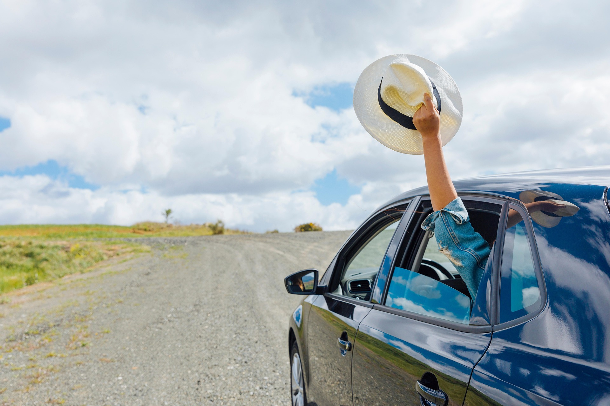

馨婷個人簡介

自我介紹
大家好，我是劉馨婷，目前就讀觀光系，個性活潑開朗、細心負責，喜歡與人交流。大學就讀觀光事業學系，暑假期間也累積餐飲工讀經驗，未來希望繼續升學，探索教師、導遊與領隊等不同職涯方向，持續提升自己的專業與溝通能力。

關於我...
我是一位就讀觀光系的學生，個性活潑開朗、細心負責，也樂於接觸不同的人事物，平時我的興趣包括旅遊、追劇、探索不同景點，以及和朋友一起出遊，從旅行中發現新的事物。
我喜歡記錄生活中的美好時刻，也對不同文化與旅遊體驗感到興趣，我的特色是具有親和力、願意學習與嘗試新事物，並且能與他人良好溝通，希望未來能將自己的興趣與觀光專業結合，朝著老師、導遊或領隊等方向發展。

學習歷程
目前就讀觀光系的我，在大學期間接觸旅遊規劃、觀光資源、導覽解說、服務管理等相關課程，逐漸建立觀光專業知識，在課程與報告中，我曾進行觀光景點資料蒐集、SDGs相關主題研究及簡報製作，學習如何整理資料、分析資訊並將內容清楚地呈現給他人。
暑假期間的餐飲業工讀經驗，則讓我學會如何與顧客溝通、處理突發狀況及與同事合作，透過課堂與實務經驗，我最大的收穫是提升了責任感、溝通能力與解決問題的能力，也更加確立未來希望繼續升學，並朝向教師、導遊或領隊等方向發展。
工作/實習經驗
暑假期間，我曾在餐飲業擔任工讀生，主要負責顧客接待、點餐、送餐、環境整理及協助店內日常工作。工作期間，我學習如何快速了解顧客需求，並以親切、有耐心的態度提供服務。
在尖峰用餐時段，經常需要同時處理點餐、送餐及整理環境等工作。我會依照工作的優先順序安排時間，與同事互相協調，確保顧客能順利完成用餐。遇到顧客詢問餐點或臨時需求時，我也會先耐心了解問題，再協助尋找適當的解決方式。
透過這些實際案例，我提升了溝通能力、臨場反應、時間管理及團隊合作能力，也學會在忙碌的工作環境中保持細心與耐心。這段餐飲工讀經驗讓我更加了解服務工作的責任，也累積了未來從事導遊、領隊或教師工作所需要的人際互動與應變能力。

旅遊經驗
第一次到國外旅遊的我，對周遭的一切都充滿好奇，走進迪士尼後，看到熟悉的卡通角色、繽紛的園區以及高大的城堡，當時覺得非常新奇，也留下深刻印象。
其中讓我最難忘的是看到迪士尼角色與精彩表演時的興奮感，還有和家人一起搭乘遊樂設施、拍照留念，當時雖然年紀還小，但那種開心與驚喜一直記在我的心中。
這次旅行讓我第一次感受到旅遊不只是到不同地方遊玩，更能創造珍貴的回憶，長大後選擇就讀觀光系，也讓我開始從專業角度思考景點規劃、服務與遊客體驗，東京迪士尼的回憶，也成為我對觀光產業產生興趣的重要起點。

美食經驗
國小二年級到東京迪士尼旅遊時，除了園區內精彩的遊樂設施與表演之外，當地的特色美食也讓我留下深刻印象。第一次到日本旅遊，對不同於台灣的食物、餐點外觀與用餐方式都感到新鮮。
我和家人在迪士尼園區裡一起品嚐特色餐點，邊吃美食、邊欣賞園區的環境，讓我感受到美食與旅遊可以結合在一起，雖然當時年紀還小，但這段經驗讓我對日本的飲食文化留下美好的印象。
現在回想起來，我發現旅遊不只是參觀景點，美食也是認識一個地方的重要方式，這次東京迪士尼的旅行，也讓我開始對「旅遊＋美食＋文化」產生興趣，並成為我喜歡觀光領域的重要回憶之一。
未來生涯規劃
大學畢業後，我計畫繼續升學考研究所，並跨領域修習教師相關學程，培養教學與溝通能力。未來希望成為老師，也保留導遊、領隊的職涯方向。